إدارة MedTech
بوابة إدارة MedTech
أدِر المنصة التي تقوم عليها كل برامج دعم المرضى — أنشئ المكاتب العلمية، وسجّل الأطباء والصيدليات، واعتمد العيادات، واضبط القواعد العامة للمنصة، وتعامل مع بلاغات إساءة الاستخدام.
لمسؤولي نظام MedTech.
اضغط على الصورة لتكبيرها.
قبل أن تبدأ
بوابة الإدارة صفحة ويب تُستخدم من الكمبيوتر، وكل ما فيها ينطبق على المنصة كلها وعلى جميع المكاتب العلمية.
- بيانات الدخول. تسجّل الدخول برقم هاتفك وكلمة المرور الخاصة بك، ولا يستخدم هذه البوابة إلا مسؤولو MedTech.
- الأكواد الفريدة. تمنح المنصة كل مكتب علمي وكل طبيب وكل صيدلية كودًا لا يتغير أبدًا:
SIOF-EG-…للمكتب، وDOC-EG-…للطبيب، وPHA-EG-…للصيدلية. وبهذه الأكواد يربط المشغّلون الأطباء والصيدليات ببرامجهم. - المرضى مجهولو الهوية في صفحات البرامج. في صفحات بلاغات إساءة الاستخدام ولوحات برامج الدعم وتصحيحات العبوات والإشعارات لا يظهر المريض إلا برمز مجهّل مثل
ANON-77874BC1، ولا يظهر اسمه أبدًا. - بعض الإجراءات لا رجعة فيها. دمج سجلَّي مقدّم خدمة وحذف حساب مريض إجراءان نهائيان، وتنبّهك الشاشة إلى ذلك قبل التأكيد.
تسجيل الدخول
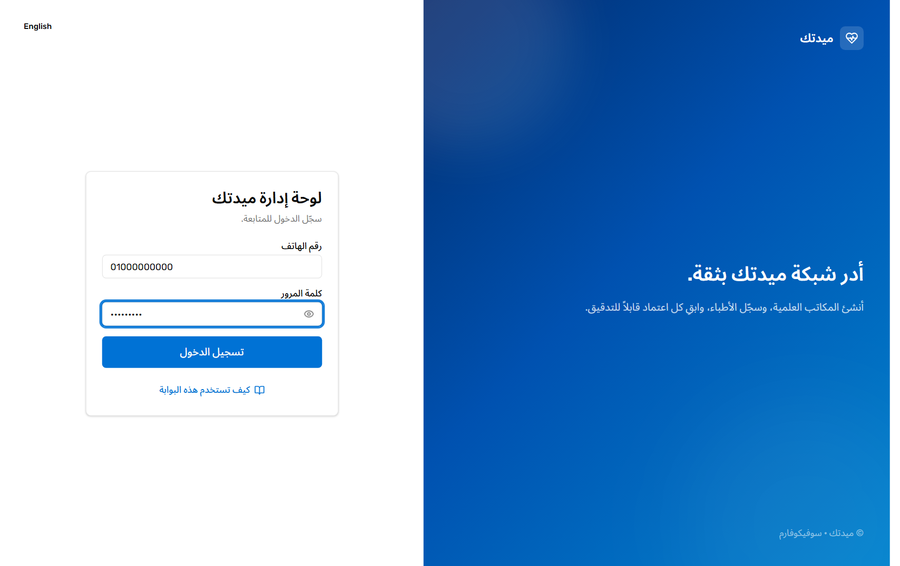
- 1رقم الهاتف — رقم هاتفك.
- 2كلمة المرور — كلمة المرور الخاصة بك.
- 3اضغط على العين لإظهار كلمة المرور أثناء كتابتها.
- 4تسجيل الدخول يفتح البوابة.
- 5بدّل لغة الشاشة بين العربية وEnglish في أي وقت.
- 6كيف تستخدم هذه البوابة يفتح هذا الدليل في علامة تبويب جديدة.
الصفحة الرئيسية
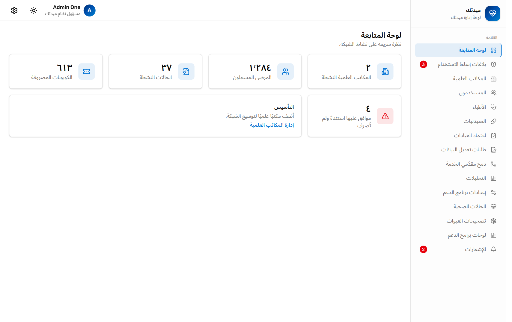
- 1القائمة الجانبية تفتح كل صفحات البوابة.
- 2بلاغات إساءة الاستخدام في أعلى القائمة، والرقم الأحمر يعرض عدد البلاغات المفتوحة التي تنتظر قرارًا، ويقل كلما اتخذت قرارًا فيها.
- 3المكاتب العلمية النشطة — عدد المكاتب العاملة على المنصة. وإلى جانبها: المرضى المسجلون والحالات النشطة والكوبونات المصروفة.
- 4موافق عليها استثناءً ولم تُصرف — حالات صدرت عليها موافقة ولم يُسلَّم دواؤها بعد.
- 5إدارة المكاتب العلمية يفتح قائمة المكاتب.
- 6زر الترس يفتح قائمة الإعدادات (أدناه). وزر الشمس بجواره يبدّل بين الوضع الفاتح والداكن.
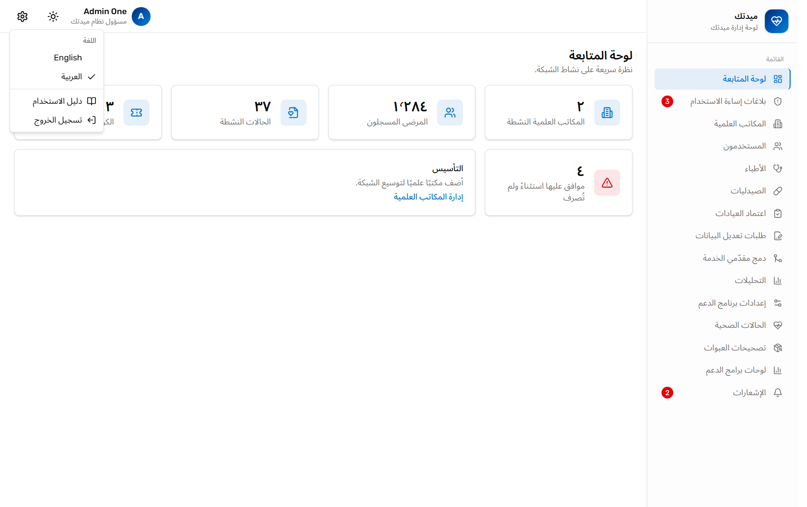
- 1اللغة — العربية أو English.
- 2دليل الاستخدام يفتح هذا الدليل في علامة تبويب جديدة، باللغة التي تقرأ بها.
- 3تسجيل الخروج — سجّل الخروج دائمًا عند ترك كمبيوتر مشترك.
المكاتب العلمية
المكتب العلمي جهة واحدة على المنصة، ويدخل فريق التشغيل الخاص به إلى بوابته ليبني البرامج ويتابع الحالات. أما أنت فتنشئ المكتب وأول مسؤول له من هنا.
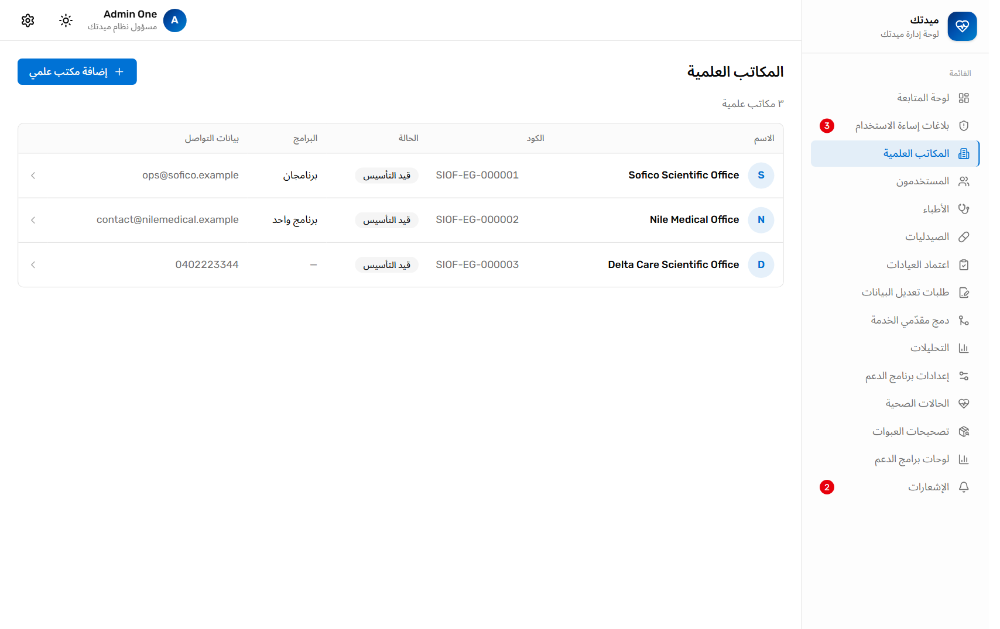
- 1إضافة مكتب علمي ينشئ مكتبًا جديدًا.
- 2اضغط على اسم المكتب لفتح صفحته.
- 3الكود — الكود الفريد للمكتب، تصدره MedTech ولا يتغير أبدًا.
- 4الحالة — قيد التأسيس أثناء إعداد المكتب، ونشط بعد بدء عمله.
- 5البرامج — عدد برامج المكتب.
إضافة مكتب علمي
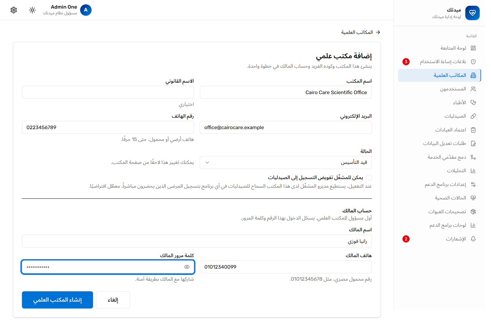
- 1اسم المكتب — مطلوب. الاسم القانوني اختياري، والبريد الإلكتروني ورقم الهاتف بيانات التواصل مع المكتب.
- 2الحالة — ابدأ المكتب قيد التأسيس أو نشط، ويمكنك تغييرها لاحقًا من صفحة المكتب.
- 3يمكن للمشغّل تفويض التسجيل إلى الصيدليات — ضع علامة عليها لتسمح لمديري التشغيل في هذا المكتب بأن يأذنوا للصيدليات في أي برنامج بتسجيل المرضى الذين يحضرون مباشرةً. وهي معطّلة افتراضيًا.
- 4حساب المالك — أول مسؤول للمكتب، ويسجّل الدخول بـهاتف المالك (رقم محمول مصري مثل 01012345678) وبكلمة المرور التي تحددها.
- 5كلمة مرور المالك — ٩ أحرف على الأقل وبها رقم. شاركها مع المالك بطريقة آمنة.
- 6إنشاء المكتب العلمي ينشئ المكتب وكوده الفريد وحساب المالك في خطوة واحدة، ثم يفتح صفحة المكتب.
صفحة المكتب
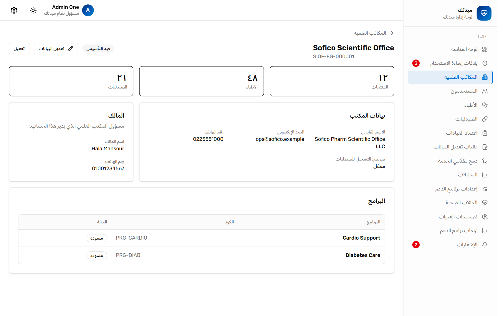
- 1اسم المكتب، وتحته كوده الفريد.
- 2الحالة.
- 3تفعيل يحوّل المكتب من قيد التأسيس إلى نشط، وفي المكتب النشط يصبح الزر نفسه إرجاع إلى التأسيس. أما تعديل البيانات بجواره فيغيّر اسم المكتب وبيانات التواصل.
- 4تفويض التسجيل للصيدليات — مفعّل أو معطّل.
- 5المالك — مسؤول المكتب الذي يديره، ورقم هاتفه.
- 6البرامج — برامج المكتب بكودها وحالتها. تعرضها هنا فقط، فالمكتب يبنيها في بوابته.
وتعرض المربعات الثلاثة في الأعلى عدد المنتجات والأطباء والصيدليات لدى المكتب.
السماح لمكتب قائم بتفويض التسجيل للصيدليات
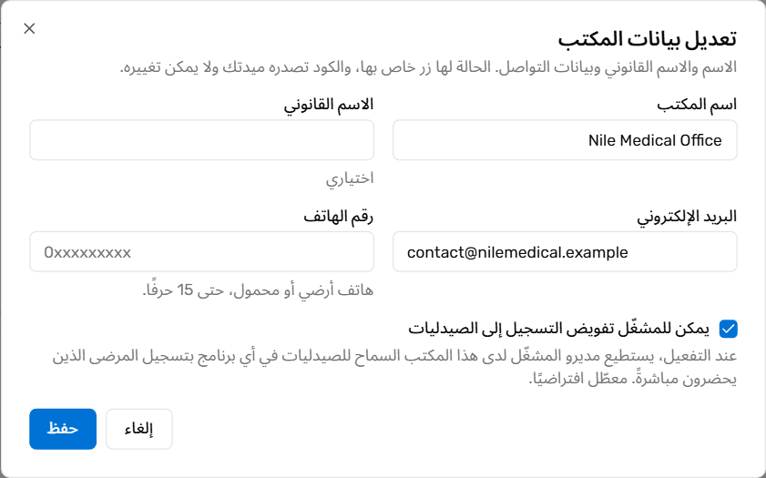
- 1تعديل بيانات المكتب — تفتح من زر تعديل البيانات في صفحة المكتب.
- 2غيّر هنا اسم المكتب أو الاسم القانوني أو البريد الإلكتروني أو رقم الهاتف. الكود لا يمكن تغييره، وللحالة زر خاص بها.
- 3ضع علامة على يمكن للمشغّل تفويض التسجيل إلى الصيدليات.
- 4حفظ — بعدها تعرض صفحة المكتب تفويض التسجيل للصيدليات: مفعّل.
هذا الخيار يمنح مديري التشغيل في المكتب صلاحية القرار فقط، وهم من يحددون في كل برنامج الصيدليات التي يحق لها تسجيل المرضى.
المستخدمون
تعرض صفحة المستخدمون كل حسابات المنصة: المرضى والأطباء ومساعدي الأطباء والصيدليات ومسؤولي المكاتب العلمية ومسؤولي MedTech.
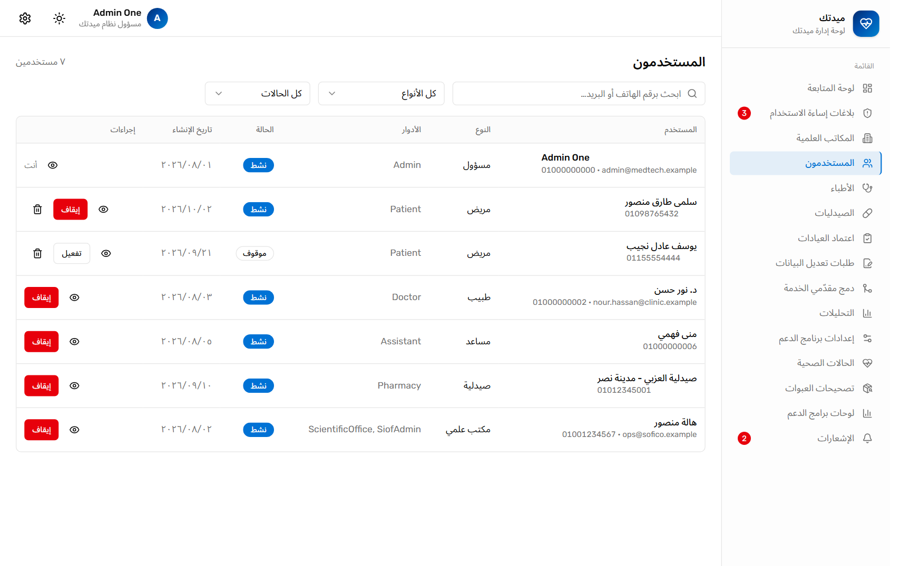
- 1ابحث برقم الهاتف أو البريد الإلكتروني.
- 2اعرض نوعًا واحدًا من الحسابات: مريض أو طبيب أو مساعد أو مسؤول أو مكتب علمي أو صيدلية. وهنا المرضى فقط.
- 3اعرض الحسابات النشطة فقط أو الموقوفة فقط.
- 4زر العين (أو الضغط على الاسم) يفتح تفاصيل الحساب.
- 5إيقاف يسجّل خروج الحساب فورًا من كل الأجهزة، ولا يستطيع الدخول مرة أخرى حتى يُعاد تفعيله. يُطلب منك التأكيد أولًا.
- 6تفعيل يعيد تشغيل الحساب الموقوف.
- 7سلة المهملات تظهر على حسابات المرضى فقط، وتحذف حساب المريض (انظر أدناه).
ويظهر حسابك الشخصي في القائمة بعلامة أنت، ولا يمكنك إيقاف نفسك.
تفاصيل الحساب
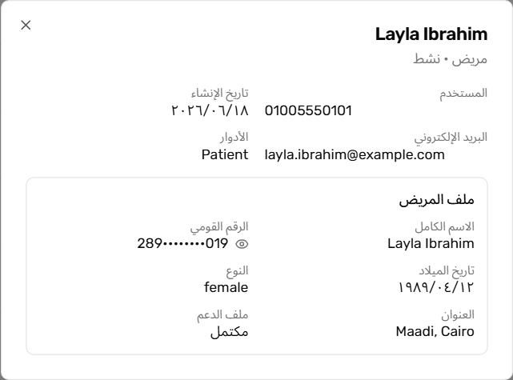
- 1اسم صاحب الحساب.
- 2نوع الحساب وحالته.
- 3ملف المريض — بيانات المريض. أما الحسابات الأخرى فتعرض بياناتها الخاصة: ترخيص الطبيب وكوده وتخصصاته وعياداته، أو كود فرع الصيدلية وترخيصه واعتماده، أو الطبيب الذي يعمل لديه المساعد، أو بيانات التواصل مع المكتب العلمي.
- 4الرقم القومي مخفي جزئيًا. اضغط على العين لإظهاره، ثم يعود مخفيًا تلقائيًا بعد ثوانٍ.
- 5ملف الدعم — مكتمل أو غير مكتمل: هل أكمل المريض ملفه الخاص بالبرامج في التطبيق.
حذف حساب مريض
قد يطلب المريض حذف حسابه. اضغط على سلة المهملات في صفه، ثم اختر مدى الحذف.
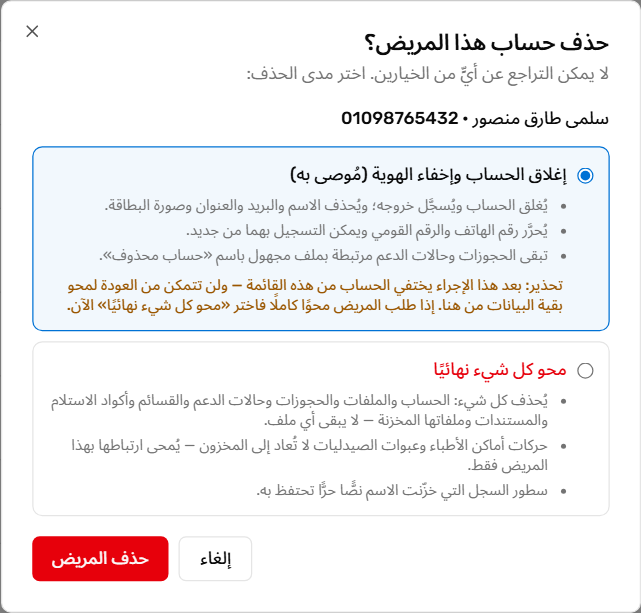
- 1إغلاق الحساب وإخفاء الهوية (مُوصى به) — يُغلق الحساب ويُسجَّل خروجه، ويُحذف الاسم والبريد والعنوان وصورة البطاقة.
- 2يُحرَّر رقم الهاتف والرقم القومي فيمكن التسجيل بهما في حساب جديد. وتبقى الحجوزات وحالات الدعم مرتبطة بملف مجهول باسم حساب محذوف.
- 3اقرأ التحذير: بعد هذا الإجراء يختفي الحساب من القائمة، ولن تتمكن من محو بقية بياناته من هنا.
- 4محو كل شيء نهائيًا — الخيار الثاني (أدناه).
- 5حذف المريض ينفّذ الخيار الأول.
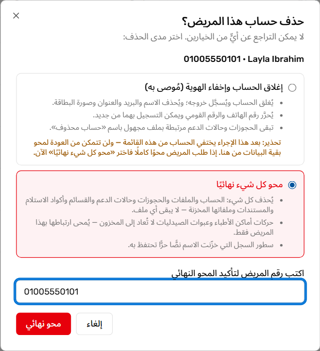
- 1اخترت محو كل شيء نهائيًا.
- 2يُحذف كل شيء: الحساب والملفات والحجوزات وحالات البرامج والقسائم وأكواد الاستلام والمستندات المرفوعة، ولا يبقى أي ملف.
- 3أماكن المرضى لدى الأطباء وعبوات الصيدليات لا تعود إلى المخزون، ويُمحى ارتباطها بهذا المريض فقط. وسطور السجل التي خزّنت الاسم نصًّا تحتفظ به.
- 4اكتب رقم هاتف المريض كما يظهر تمامًا، ويبقى الزر معطّلًا حتى يتطابق الرقم.
- 5محو نهائي يحذف كل شيء.
| إغلاق الحساب وإخفاء الهوية | محو كل شيء نهائيًا | |
|---|---|---|
| الحساب | يُغلق ويُسجَّل خروجه | يُحذف |
| الاسم والبريد والعنوان وصورة البطاقة | تُحذف | تُحذف |
| رقم الهاتف والرقم القومي | يُحرَّران لحساب جديد | يُحرَّران لحساب جديد |
| الحجوزات وحالات البرامج | تبقى باسم حساب محذوف | تُحذف |
| هل يمكن محو المزيد لاحقًا من هذه الصفحة؟ | لا | — |
الأطباء
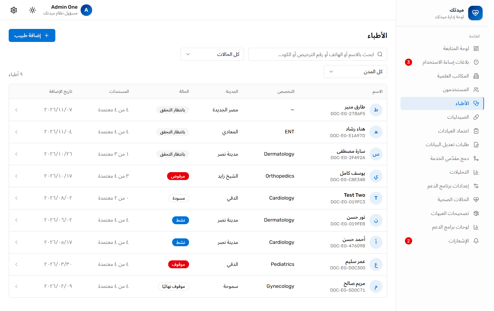
- 1إضافة طبيب ينشئ حساب طبيب.
- 2ابحث بالاسم أو الهاتف أو رقم الترخيص أو الكود.
- 3صفِّ القائمة حسب الحالة، والخانة تحتها تصفّيها حسب المدينة.
- 4اضغط على اسم الطبيب لفتح صفحته.
- 5الكود الفريد للطبيب (
DOC-EG-…). - 6الحالة: مسودة أو بانتظار التحقق أو نشط أو موقوف أو مرفوض أو موقوف نهائيًا.
- 7المستندات — عدد مستندات التحقق المعتمدة من مستندات الطبيب.
إضافة طبيب
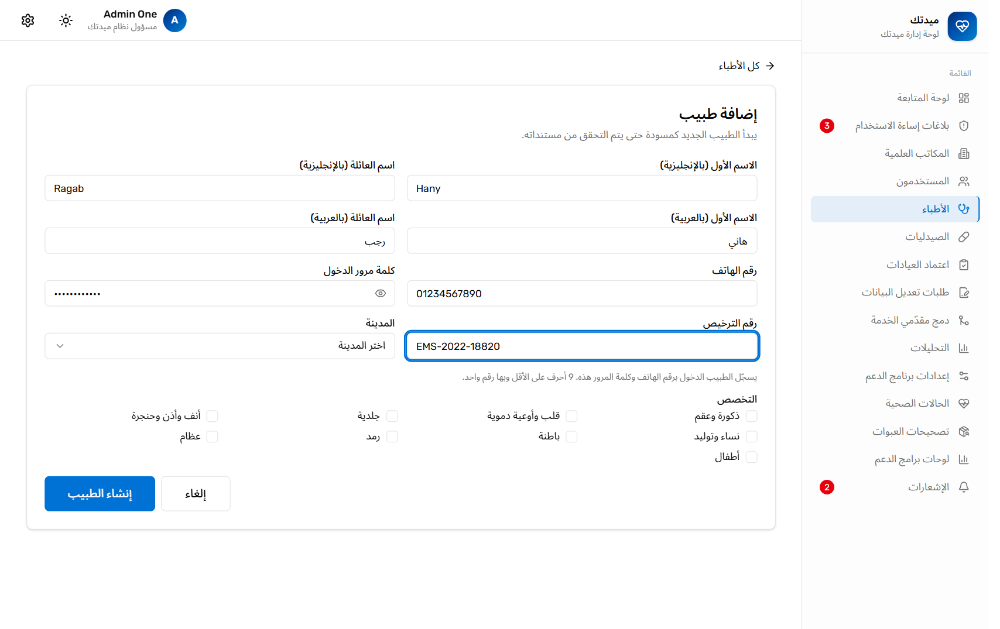
- 1الاسم الأول (بالإنجليزية) واسم العائلة (بالإنجليزية).
- 2الاسم الأول (بالعربية) واسم العائلة (بالعربية) — مطلوبان، فلا يمكن تفعيل الطبيب دون اسمه بالعربية.
- 3رقم الهاتف — رقم محمول الطبيب، ويسجّل الدخول به.
- 4كلمة مرور الدخول — تحددها أنت: ٩ أحرف على الأقل وبها رقم واحد. اضغط على العين لمراجعة ما كتبت.
- 5رقم الترخيص. والمدينة بجواره مطلوبة أيضًا.
- 6التخصص — اختر تخصصًا واحدًا أو أكثر.
- 7إنشاء الطبيب ينشئ الحساب ويفتح صفحة الطبيب.
يبدأ الطبيب الجديد كمسودة حتى يتم التحقق من مستنداته. سلّم الطبيب رقم الهاتف وكلمة المرور بنفسك.
صفحة الطبيب وتفعيله
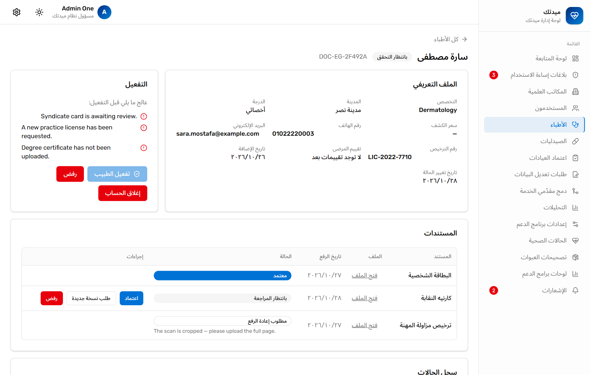
- 1اسم الطبيب وحالته وكوده الفريد.
- 2الملف التعريفي — التخصص والمدينة والدرجة وسعر الكشف وبيانات التواصل ورقم الترخيص.
- 3التفعيل يعرض ما يمنع التفعيل، كل أمر في سطر — وهنا مستند ينتظر المراجعة، ونسخة جديدة مطلوبة، ومستند لم يُرفع أصلًا. وعندما لا ينقص شيء تظهر عبارة اكتملت جميع المتطلبات. يمكن تفعيل الطبيب.
- 4تفعيل الطبيب يجعل الطبيب نشطًا وظاهرًا للمرضى، ويبقى معطّلًا حتى تكتمل جميع المتطلبات.
- 5رفض يعيد الطلب إلى الطبيب مع ذكر السبب.
- 6إغلاق الحساب يغلق حساب الطبيب.
تتغير الأزرار بحسب حالة الطبيب: فالطبيب النشط يظهر له زر إيقاف مؤقت، والطبيب المرفوض يظهر له زر إرسال للمراجعة، وهكذا. ويُطلب منك تأكيد كل تغيير أولًا، بما في ذلك تفعيل الطبيب. ومع رفض وإيقاف مؤقت وإغلاق الحساب يجب كتابة سبب يراه الطبيب، فوضّح ما يجب تغييره. أما في التغييرات الأخرى فالسبب ملاحظة اختيارية للسجل. ويمكن إعادة فتح الحساب المغلق: فالضغط على تفعيل الطبيب فيه يعيد الطبيب ظاهرًا للمرضى، وتوضّح رسالة التأكيد ذلك.
وفي أسفل الصفحة: سجل الحالات (كل تغيير في الحالة مع سببه وتاريخه) والعيادات (عيادات الطبيب).
مراجعة مستندات الطبيب
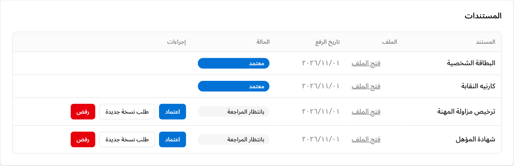
- 1المستندات — البطاقة الشخصية وكارنيه النقابة وترخيص مزاولة المهنة وشهادة المؤهل التي رفعها الطبيب.
- 2فتح الملف يفتح المستند في تبويب جديد.
- 3حالة المستند: بانتظار المراجعة أو معتمد أو مرفوض أو مطلوب إعادة الرفع. وتظهر تحتها الملاحظة التي أرسلتها للطبيب.
- 4اعتماد يقبل المستند.
- 5رفض يرفضه. أضف ملاحظة ليعرف الطبيب ما يجب تصحيحه.
وبين الزرين، طلب نسخة جديدة يتيح للطبيب استبدال الملف، فوضّح له الخطأ فيه. ولا تظهر هذه الأزرار إلا على المستندات التي تنتظر المراجعة.
الصيدليات
كل صيدلية هنا فرع واحد، له حساب دخول واحد يستخدمه كل من يعمل على الكاونتر.
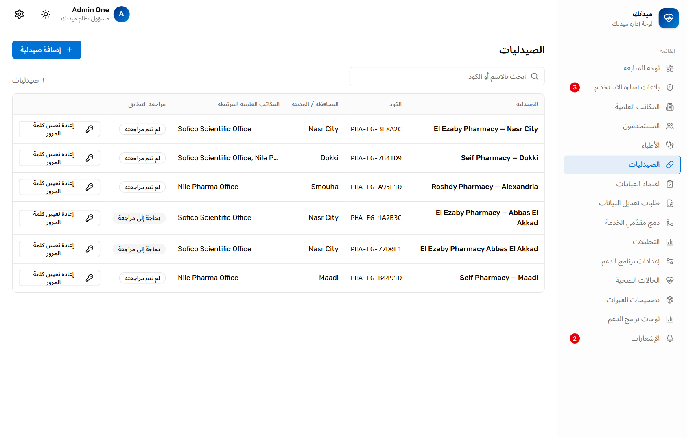
- 1إضافة صيدلية ينشئ صيدلية وحساب دخولها.
- 2ابحث بالاسم أو الكود.
- 3الكود — الكود الفريد للصيدلية (
PHA-EG-…)، وبه يربط المشغّل الصيدلية ببرنامج. - 4مراجعة التطابق — بحاجة إلى مراجعة تعني أن المنصة تشك في أن هذه الصيدلية مكررة مع صيدلية أخرى. احسم ذلك من دمج مقدّمي الخدمة.
- 5إعادة تعيين كلمة المرور يمنح الفرع كلمة مرور مؤقتة جديدة.
اضغط على اسم الصيدلية لفتح صفحتها.
إضافة صيدلية
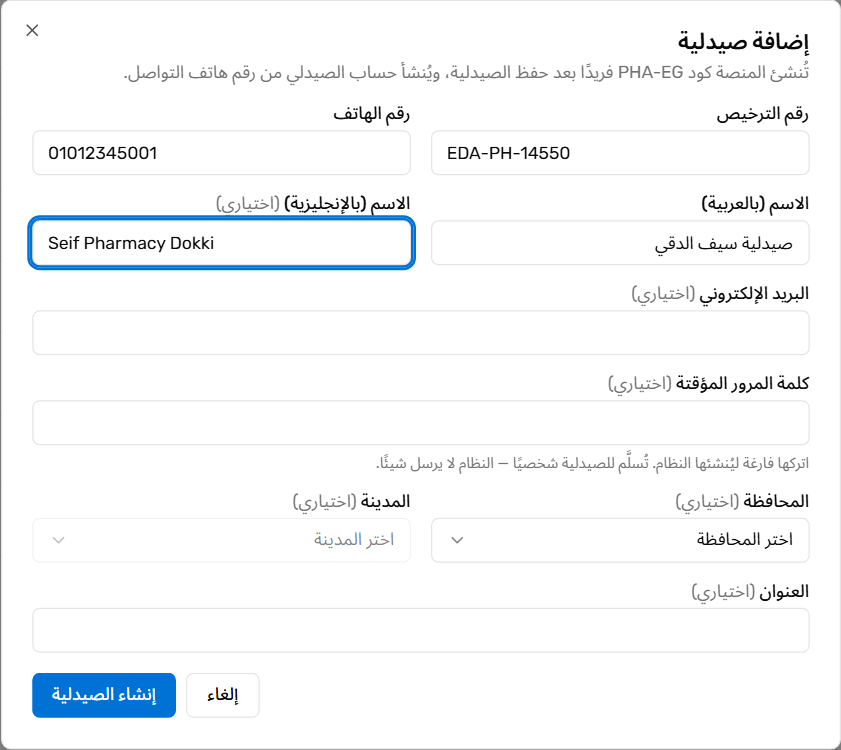
- 1رقم الترخيص — مطلوب. لا يمكن أن تشترك صيدليتان في رقم ترخيص واحد، فإذا كان الرقم مسجلًا لصيدلية أخرى يتوقف النموذج ويوضّح ذلك.
- 2رقم الهاتف — مطلوب، ومنه يُنشأ حساب دخول الصيدلي.
- 3الاسم (بالعربية) — مطلوب بحروف عربية. أما الاسم (بالإنجليزية) فاختياري.
- 4كلمة المرور المؤقتة — اختيارية. اتركها فارغة ليُنشئها النظام، وإن كتبتها بنفسك فلتكن ٩ أحرف على الأقل.
- 5إنشاء الصيدلية.
أما البريد الإلكتروني والمحافظة والمدينة والعنوان فاختيارية.
بعد إنشاء الصيدلية
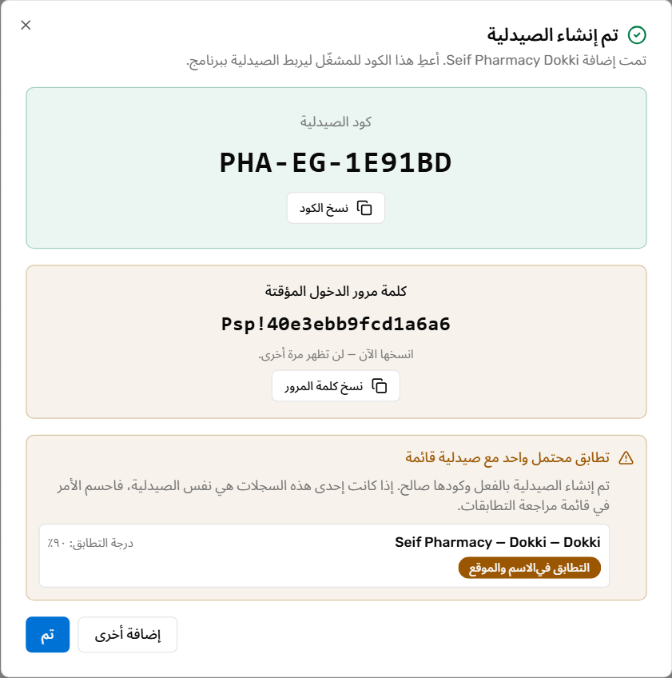
- 1كود الصيدلية — الكود الفريد الجديد. أعطه للمشغّل ليربط الصيدلية ببرنامج.
- 2نسخ الكود ينسخه.
- 3كلمة مرور الدخول المؤقتة — يسجّل الفرع الدخول برقم الهاتف وبهذه الكلمة.
- 4انسخها الآن، فلن تظهر مرة أخرى.
- 5تطابق محتمل، إن وجدت المنصة واحدًا: الصيدلية القائمة، وما الذي تطابق، ودرجة التطابق. الصيدلية الجديدة أُنشئت فعلًا وكودها صالح — فإن كانت هي نفسها الصيدلية القائمة فاحسم الأمر من دمج مقدّمي الخدمة.
- 6تم يغلق النافذة، وإضافة أخرى يبدأ صيدلية جديدة.
إعادة تعيين كلمة مرور صيدلية
اضغط على إعادة تعيين كلمة المرور في صف الصيدلية (أو في صفحتها) ثم أكّد. تتوقف كلمة المرور الحالية عن العمل فورًا.
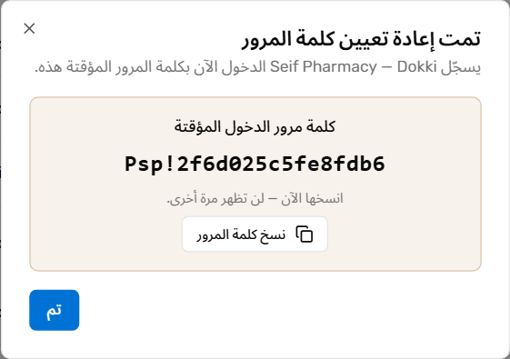
- 1تمت إعادة تعيين كلمة المرور — يسجّل الفرع الدخول الآن بكلمة المرور المؤقتة هذه.
- 2نسخ كلمة المرور — انسخها وسلّمها بنفسك، فهي تظهر مرة واحدة فقط.
صفحة الصيدلية
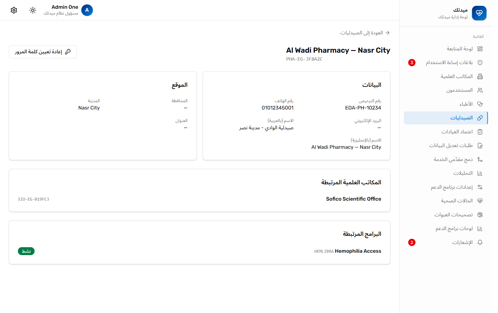
- 1اسم الصيدلية وكودها الفريد.
- 2البيانات — رقم الترخيص والهاتف والبريد والاسمان العربي والإنجليزي.
- 3الموقع — المحافظة والمدينة والعنوان.
- 4المكاتب العلمية المرتبطة — المكاتب العلمية التي ترتبط بها الصيدلية.
- 5البرامج المرتبطة — البرامج المرتبطة بها الصيدلية وحالة كل منها.
- 6إعادة تعيين كلمة المرور كما سبق.
دمج مقدّمي الخدمة
قد يُسجَّل الطبيب نفسه أو الصيدلية نفسها مرتين بكودين مختلفين. تعرض صفحة دمج مقدّمي الخدمة الأزواج التي تشك المنصة في أنها لمقدّم خدمة واحد، لتدمجها أو تسجّل أنها مختلفة.
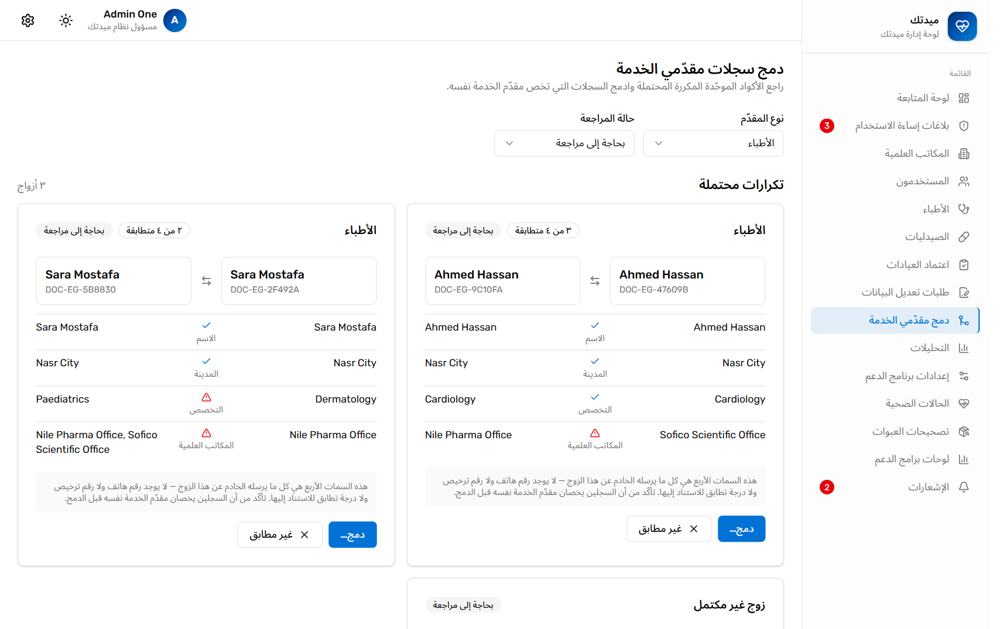
- 1نوع المقدّم — الأطباء أو الصيدليات.
- 2حالة المراجعة — بحاجة إلى مراجعة تعرض الأزواج التي ما زالت تنتظرك.
- 3عدد البيانات المتطابقة من البيانات الأربع التي تُقارن (الاسم والمدينة والتخصص والمكاتب العلمية).
- 4البيان الذي يكون مختلف بين السجلين تميّزه علامة تحذير.
- 5دمج… يدمج السجلين في سجل واحد.
- 6غير مطابق يسجّل أنهما مقدّما خدمة مختلفان، فيخرج الزوج من بحاجة إلى مراجعة.
قارِن بعناية، فهذه البيانات الأربع هي كل ما تعرضه المنصة عن الزوج. وتحت الأزواج تعرض كل مقدّمي الخدمة كل الأطباء والصيدليات بأكوادهم الموحّدة وحالة مراجعتهم. والزوج الموسوم زوج غير مكتمل لا يمكن دمجه، لأن أحد سجليه لم يعد موجودًا.
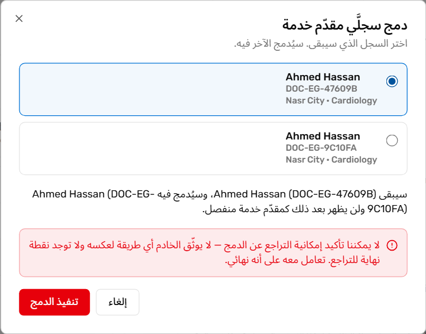
- 1اختر السجل الذي سيبقى، فيُدمج الآخر فيه.
- 2حدّد السجل الذي تريد إبقاءه.
- 3يوضّح الملخص السجل الذي سيبقى والسجل الذي سيختفي.
- 4تعامل مع الدمج على أنه نهائي، فلا يمكن التراجع عنه.
- 5تنفيذ الدمج يدمج السجلين.
اعتماد العيادات
يسجّل الأطباء عياداتهم من بوابة الطبيب، ولا تستقبل العيادة الجديدة حجوزات حتى تعتمدها.
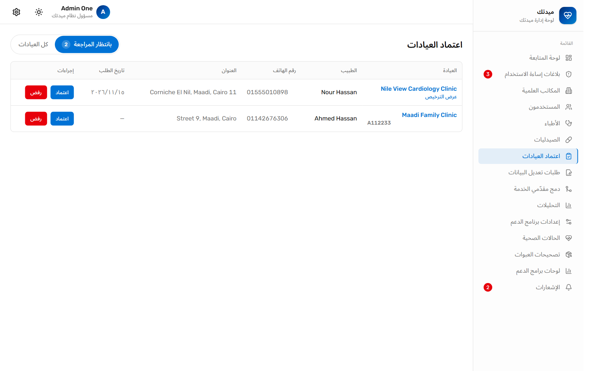
- 1بانتظار المراجعة — العيادات التي تنتظر قرارًا، مع عددها.
- 2كل العيادات — كل العيادات بحالاتها، مع البحث والتصفية حسب الحالة.
- 3عرض الترخيص يفتح ترخيص العيادة. وإذا كتب الطبيب رقم الترخيص بدل رفع مستند يظهر الرقم نفسه.
- 4اعتماد يجعل العيادة متاحة للحجز، وتظهر رسالة باسم العيادة التي اعتمدتها.
- 5رفض يطلب منك سببًا يراه الطبيب كما تكتبه تمامًا، فوضّح ما يجب تعديله.
اضغط على اسم العيادة لفتح صفحتها.
صفحة العيادة
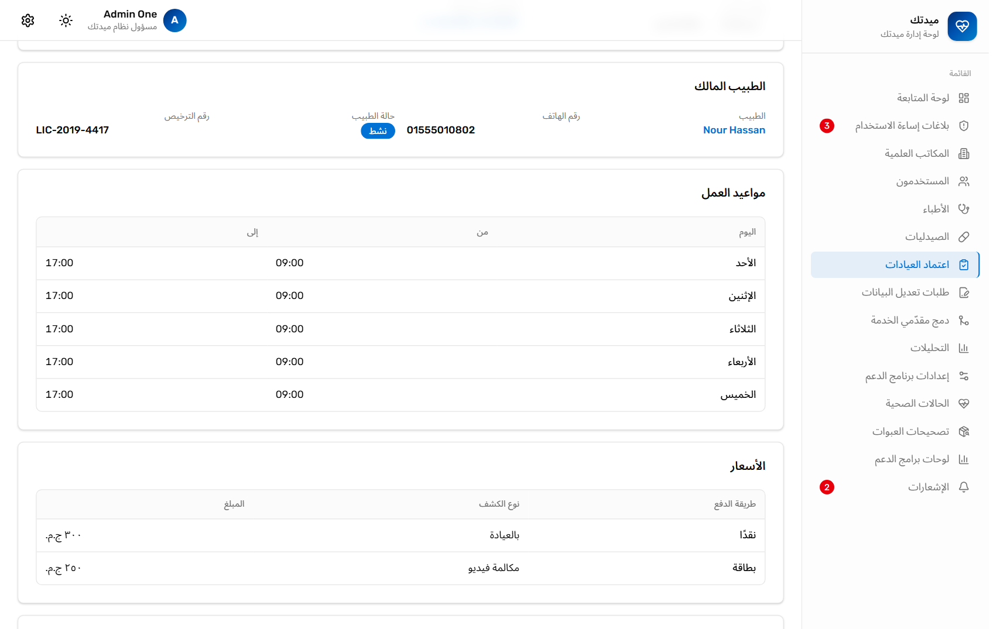
- 1الطبيب المالك — الطبيب ورقم هاتفه وحالته ورقم ترخيصه.
- 2مواعيد العمل — الجدول الأسبوعي للعيادة.
- 3الأسعار — طريقة دفع المرضى لكل نوع من أنواع الكشف.
وفوق هذه الأقسام يظهر الترخيص وبيانات العيادة (العنوان ونوع العيادة وقنوات الحجز والموقع على الخريطة). وفي الأسفل يعرض سجل المراجعة متى أُرسلت العيادة ومتى اعتُمدت أو رُفضت. أما زرا اعتماد ورفض ففي أعلى الصفحة.
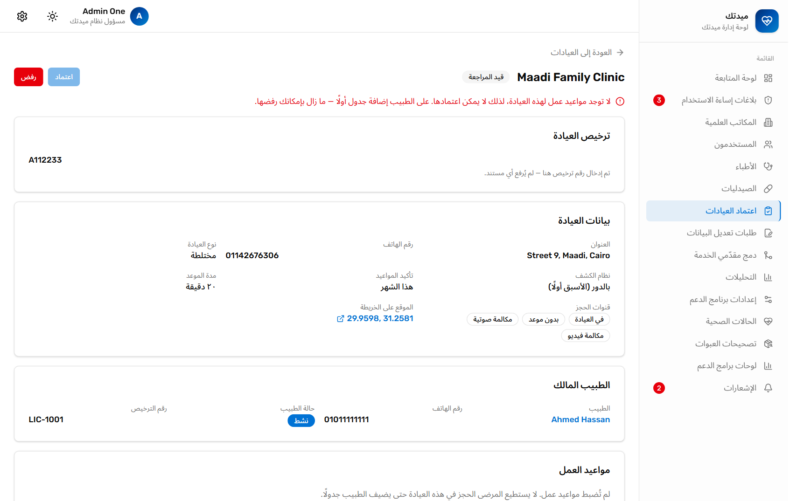
- 1العيادة قيد المراجعة.
- 2لا توجد مواعيد عمل لهذه العيادة، لذلك لا يمكن اعتمادها بعد، وعلى الطبيب إضافة جدول أولًا.
- 3زر اعتماد معطّل.
- 4زر رفض ما زال متاحًا.
العيادة المرفوضة لا يمكن اعتمادها من هنا؛ يصحّحها الطبيب ويعيد إرسالها، فتعود إلى بانتظار المراجعة.
طلبات تعديل البيانات الرسمية
عندما يريد الطبيب تعديل بيان رسمي — الاسم القانوني أو التخصص أو رقم الترخيص أو ترخيص العيادة — يصل طلبه إلى صفحة طلبات تعديل البيانات. ويظل الطبيب متاحًا للحجز أثناء انتظار الطلب.
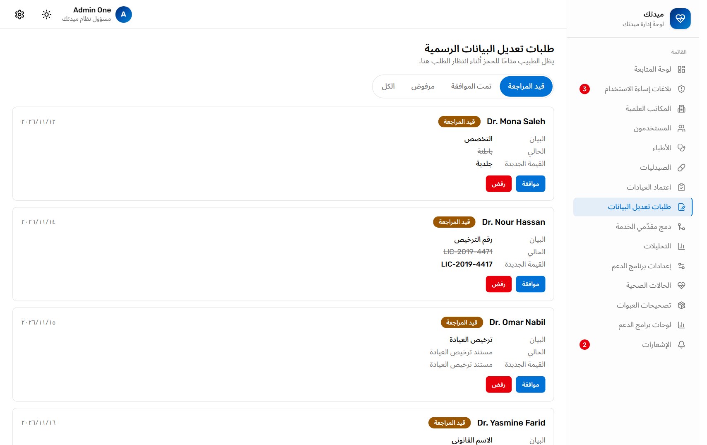
- 1اعرض الطلبات قيد المراجعة أو التي تمت الموافقة عليها أو مرفوض أو الكل.
- 2الطبيب وحالة طلبه.
- 3البيان — ما يريد الطبيب تعديله، وتحته قيمته في خانة الحالي مشطوبة.
- 4القيمة الجديدة — ما يطلبه الطبيب. وإذا كان التعديل مستندًا فإن فتح المستند يفتحه.
- 5رفض يرفض التعديل، وموافقة بجواره تقبله.
عند الرفض يجب أن تكتب سبب الرفض، ويراه الطبيب.
إعدادات برنامج الدعم
تضم صفحة إعدادات برنامج الدعم القواعد العامة للمنصة التي لا يضبطها إلا MedTech.
حد الكوبونات على مستوى المنصة
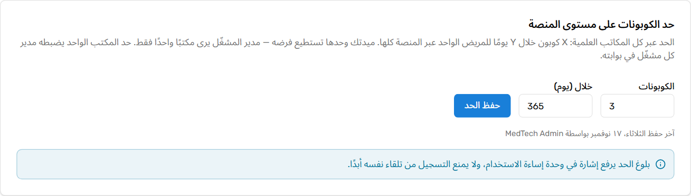
- 1الكوبونات — أقصى عدد من الكوبونات يمكن أن يحصل عليه المريض الواحد…
- 2خلال (يوم) — …خلال هذا العدد من الأيام، عبر كل المكاتب العلمية مجتمعة.
- 3حفظ الحد يحفظه.
- 4من حفظ الحد آخر مرة، ومتى.
- 5بلوغ الحد يرفع بلاغًا في بلاغات إساءة الاستخدام، ولا يمنع التسجيل من تلقاء نفسه أبدًا.
لا يستطيع فرض هذا الحد إلا MedTech، لأن كل مكتب لا يرى إلا برامجه ولا يعرف ما يحصل عليه المريض في مكان آخر. ويضبط كل مكتب حدّه الخاص المستقل في بوابته.
حقول تسجيل المريض
هذه هي الحقول التي يملؤها المريض عند إنشاء حسابه في التطبيق.
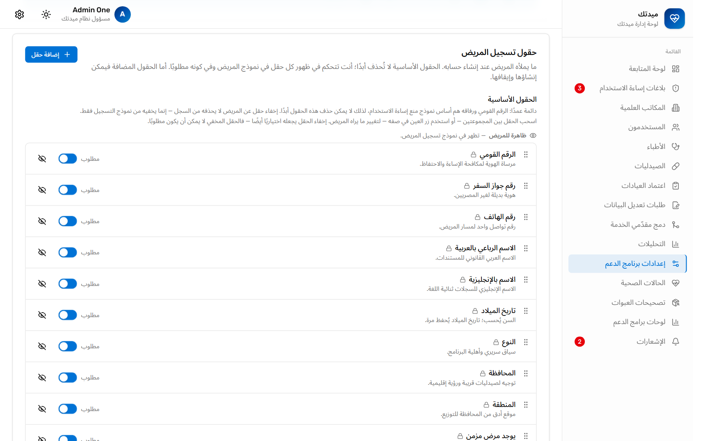
- 1إضافة حقل يضيف حقلًا خاصًا بك: تسمية بالإنجليزية وأخرى بالعربية، والنوع (نص أو رقم أو تاريخ أو اختيار)، وهل هو مطلوب.
- 2الحقول الأساسية — الحقول المدمجة في المنصة، مثل الرقم القومي وصور البطاقة، ولا يمكن حذفها أبدًا.
- 3ظاهرة للمريض — الحقول التي تظهر في نموذج المريض. وتحت هذه المجموعة تضم غير ظاهرة للمريض الحقول المخفية.
- 4مطلوب — هل يجب على المريض ملء الحقل.
- 5زر العين يخفي الحقل عن المريض (أو يُظهره من جديد). ويمكنك أيضًا سحب الحقل بين المجموعتين.
إخفاء الحقل يجعله اختياريًا أيضًا، لأن الحقل المخفي لا يمكن أن يكون مطلوبًا. والإخفاء يزيل الحقل من نموذج المريض فقط ولا يحذفه من السجل. أما الحقول التي أضفتها فتظهر تحت الحقول المضافة، حيث يوقف زر إيقاف الحقل (فيبقى في القائمة بعلامة موقوف) ويعيده زر تفعيل.
الحالات الصحية
الحالات الصحية هي القائمة الثابتة التي توسم بها البرامج ويبحث بها المرضى، ولا يديرها إلا MedTech.
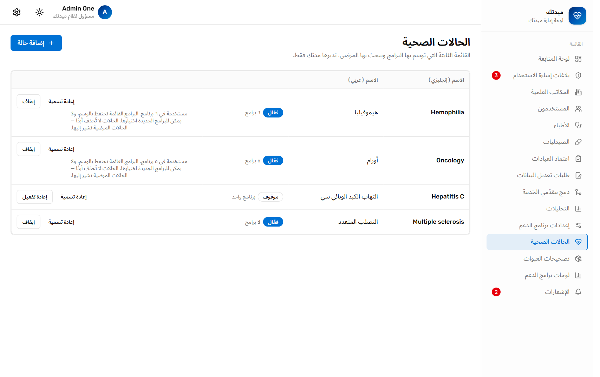
- 1إضافة حالة — اكتب الاسم بالإنجليزية وبالعربية.
- 2حالة الوسم (فعّال أو موقوف) وعدد البرامج التي تستخدمه.
- 3إيقاف يوقف الحالة. وإعادة تسمية بجواره يصحّح اسمها.
- 4قبل الضغط يوضّح الصف معنى الإيقاف: البرامج القائمة تحتفظ بالوسم، لكن البرامج الجديدة لا يمكنها اختياره.
- 5إعادة تفعيل يعيد حالة موقوفة.
الحالات الصحية لا تُحذف أبدًا، لأن حالات المرضى تشير إليها.
بلاغات إساءة الاستخدام
تراقب المنصة الأنماط التي قد تدل على إساءة الاستخدام عبر أكثر من مكتب علمي — مثل مريض يبلغ حد الكوبونات على مستوى المنصة عن طريق مكاتب مختلفة. فترفع المنصة بلاغًا، ويقرر إنسان ما يجب فعله.
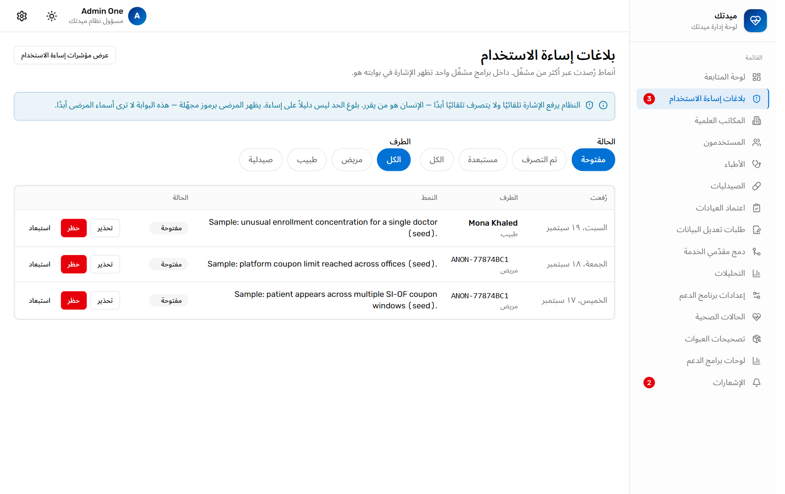
- 1تعرض القائمة عدد البلاغات المفتوحة.
- 2القاعدة: النظام يرفع البلاغ تلقائيًا ولا يتصرف من تلقاء نفسه أبدًا، وبلوغ الحد ليس دليلًا على الإساءة. ويظهر المرضى برموز مجهّلة فقط، فهذه البوابة لا ترى أسماءهم أبدًا.
- 3الحالة — مفتوحة أو تم التصرف أو مستبعدة أو الكل.
- 4الطرف — مريض أو طبيب أو صيدلية أو الكل.
- 5صاحب البلاغ: المريض يظهر برمز مجهّل، أما الطبيب أو الصيدلية فبالاسم.
- 6القرارات المتاحة على كل بلاغ مفتوح: تحذير وحظر واستبعاد.
- 7عرض مؤشرات إساءة الاستخدام يفتح تبويب إساءة الاستخدام في لوحات برامج الدعم.
| القرار | ماذا يفعل |
|---|---|
| تحذير | يُسجَّل التحذير ويُخطَر الطرف، ولا يُحظر شيء. |
| حظر | يوقف وصول الطرف إلى برامج الدعم حتى يُرفع الحظر. استخدمه بعد تحذير لم يغيّر النمط. |
| استبعاد | يسجّل أن إنسانًا راجع النمط ولم يجد إساءة. |
الأنماط التي تقع داخل برامج مكتب واحد لا تظهر هنا، بل تظهر في بوابة ذلك المكتب.
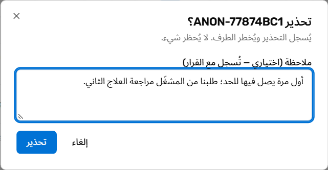
- 1القرار والرمز المجهّل الذي يخصه.
- 2ما الذي يفعله القرار.
- 3ملاحظة — اختيارية، وتُسجَّل مع القرار.
- 4تحذير يؤكد القرار، فينتقل البلاغ إلى تم التصرف مع اسم من قرر ووقته.
لوحات برامج الدعم
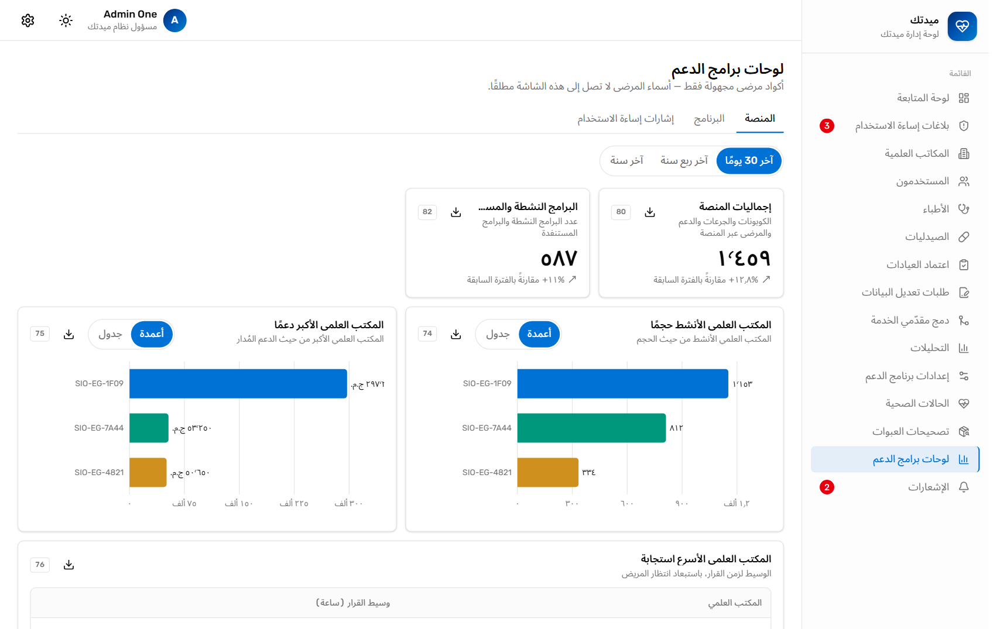
- 1ثلاثة تبويبات: المنصة (أرقام المنصة كلها) والبرنامج وإشارات إساءة الاستخدام.
- 2الفترة: آخر 30 يومًا أو آخر ربع سنة أو آخر سنة.
- 3التغير مقارنةً بالفترة السابقة المساوية لها في الطول.
- 4زر التنزيل يصدّر بيانات المؤشر في ملف CSV.
- 5بدّل طريقة عرض المؤشر، مثل أعمدة وجدول.
كل المؤشرات تستخدم رموز المرضى المجهّلة فقط، ولا تصل الأسماء إلى هذه اللوحات أبدًا. وتظهر المكاتب بأكوادها. والمؤشر الذي يعرض لم يُبنَ بعد لا توجد وراءه بيانات حتى الآن.
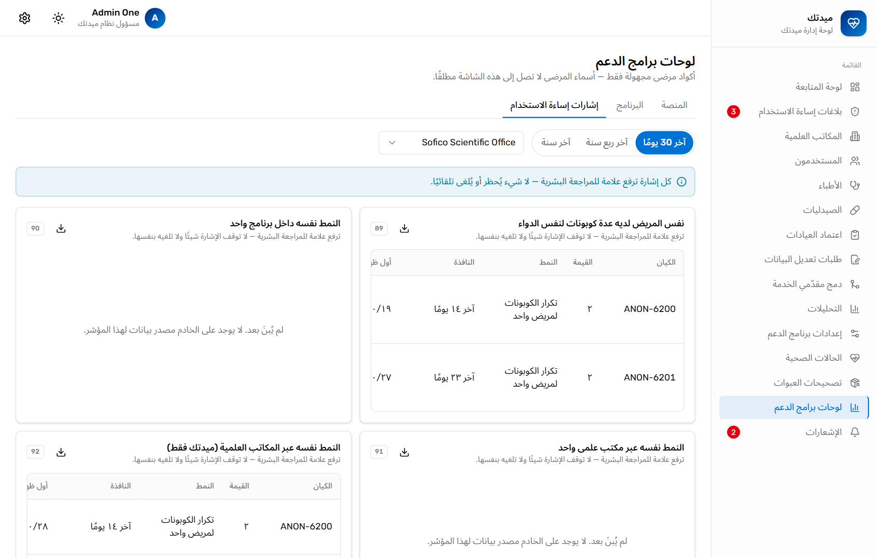
- 1كل إشارة ترفع بلاغًا للمراجعة البشرية فقط — لا شيء يُحظر أو يُلغى تلقائيًا.
- 2يظهر المرضى برموز مجهّلة.
- 3في تبويبي البرنامج وإشارات إساءة الاستخدام اختر المكتب العلمي الذي تريد عرضه.
التحليلات
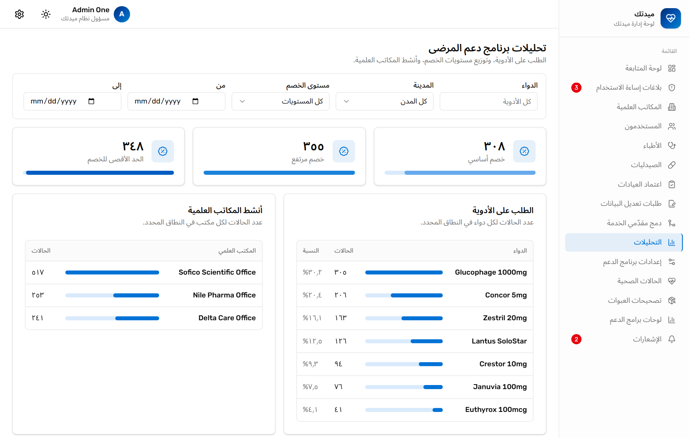
- 1ضيّق الأرقام حسب الدواء والمدينة ومستوى الخصم. تتحدث الأرقام فور اختيارك، ويظهر زر مسح لإزالة عوامل التصفية.
- 2من وإلى تحددان الفترة الزمنية.
- 3توزيع مستويات الخصم — العدد الواقع في كل مستوى.
- 4الطلب على الأدوية — عدد الحالات لكل دواء ونسبته.
- 5أنشط المكاتب العلمية — عدد الحالات التي تعامل معها كل مكتب.
تصحيحات العبوات
قد يسجّل الصيدلي رقمًا تسلسليًا خاطئًا للعبوة عند الكاونتر. تتيح لك صفحة تصحيحات العبوات تصحيح العبوة التي سُلّمت فعلًا، باستخدام مرجع التسليم المطبوع على التقارير. ولا تظهر في هذه الصفحة أي بيانات تكشف هوية المريض.
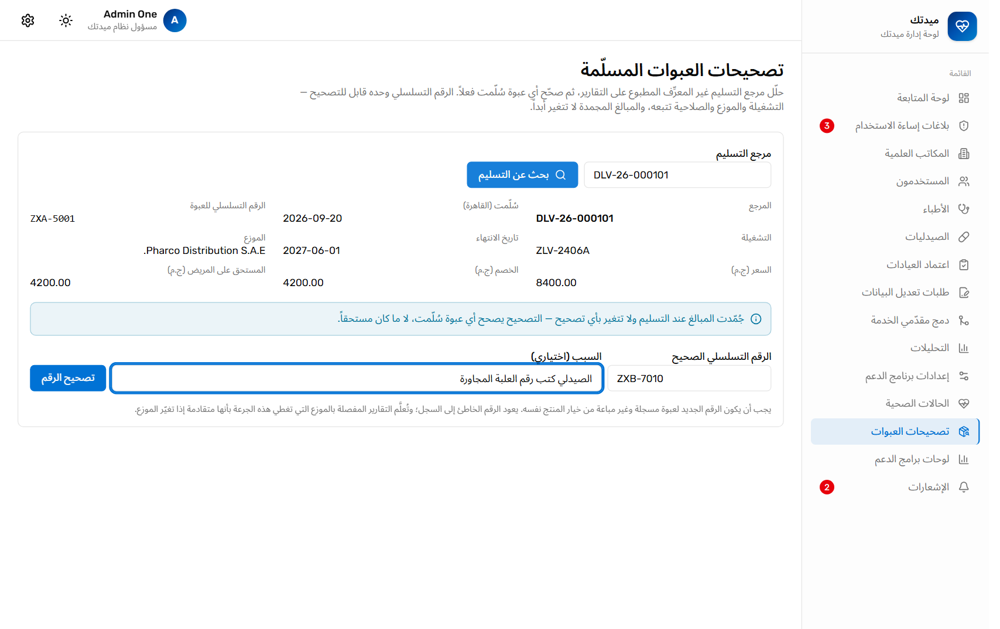
- 1اكتب مرجع التسليم (
DLV-…) واضغط بحث عن التسليم. - 2التسليم كما سُجّل: الرقم التسلسلي للعبوة والتشغيلة والموزع وتاريخ الانتهاء والمبالغ.
- 3جُمّدت المبالغ عند التسليم، ولا يغيّرها أي تصحيح — فالتصحيح يحدد أي عبوة سُلّمت، لا ما كان مستحقًا.
- 4الرقم التسلسلي الصحيح — رقم العبوة التي سُلّمت فعلًا.
- 5السبب (اختياري) — سبب التصحيح.
- 6تصحيح الرقم يحفظ التصحيح.
يجب أن يكون الرقم الجديد لعبوة مسجلة وغير مباعة من خيار المنتج نفسه، ويعود الرقم المسجل خطأً إلى السجل.
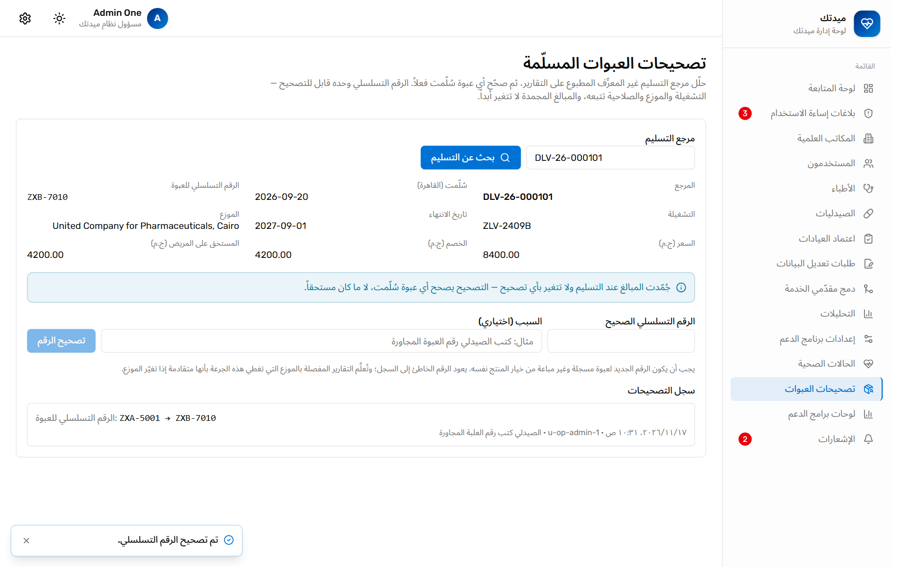
- 1الرقم التسلسلي الجديد، وتتبعه التشغيلة والموزع وتاريخ الانتهاء، بينما تبقى المبالغ كما هي.
- 2سجل التصحيحات — كل تصحيح أُجري على هذا التسليم.
- 3الرقم القديم والجديد، ومتى، ومن أجرى التصحيح، ولماذا.
| ما يظهر | المعنى |
|---|---|
| لا توجد جرعة مسلّمة بهذا المرجع. | راجع المرجع المكتوب في التقرير. |
| هذا الرقم غير موجود في سجل التشغيلات — يجب أن يسمي التصحيح عبوة مسجلة. | الرقم مكتوب خطأ أو العبوة غير مسجلة. |
| هذا الرقم مسجل بالفعل على تسليم مكتمل آخر. | هذه العبوة مسجلة بالفعل على تسليم مكتمل آخر. |
| هذا الرقم يخص تشغيلة لخيار منتج مختلف. | العبوة لمنتج أو تركيز مختلف. |
| هذا هو الرقم المسجل بالفعل. | لا يوجد ما يُصحَّح. |
الإشعارات
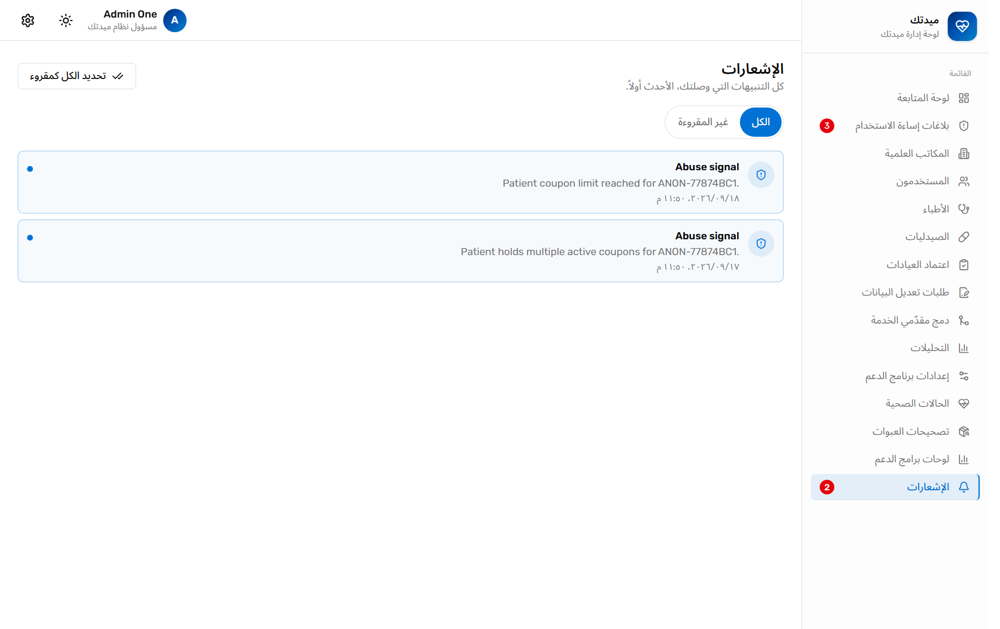
- 1تحديد الكل كمقروء يزيل علامات غير المقروء.
- 2الكل يعرض سجلك كاملًا، وغير المقروءة يعرض ما لم تقرأه فقط.
- 3إشعار. وتصل الإشعارات حاليًا عندما يرصد النظام نمطًا يمتد عبر أكثر من مكتب علمي، ويظهر فيها المريض برمز مجهّل.
- 4تعرض القائمة عدد الإشعارات غير المقروءة.
إجابات سريعة
مريض يريد حذف بياناته. افتح المستخدمون، وابحث عن المريض، واضغط على سلة المهملات. وإذا طلب محو كل شيء فاختر محو كل شيء نهائيًا، فلا توجد فرصة ثانية من هذه الصفحة.
لا يمكن تفعيل طبيب. افتح صفحة الطبيب واقرأ قسم التفعيل، فهو يعرض ما ينقص، وغالبًا مستند ما زال ينتظر مراجعتك أو الاسم بالعربية.
لا أستطيع اعتماد عيادة. افتح العيادة؛ فإذا لم تكن لها مواعيد عمل فعلى الطبيب إضافة جدول أولًا، ويمكنك رفضها مع ذكر السبب.
صيدلية فقدت كلمة المرور. اضغط على إعادة تعيين كلمة المرور في صفها، وسلّم كلمة المرور المؤقتة الجديدة بنفسك.
سجلان لطبيب واحد. ادمجهما من دمج مقدّمي الخدمة، واختر السجل الذي سيبقى بعناية، فالدمج لا يمكن التراجع عنه.
هل يحظر البلاغ المريض؟ لا. البلاغ يطلب قرارًا فقط، ولا يُحظر أحد حتى يختار إنسان حظر.